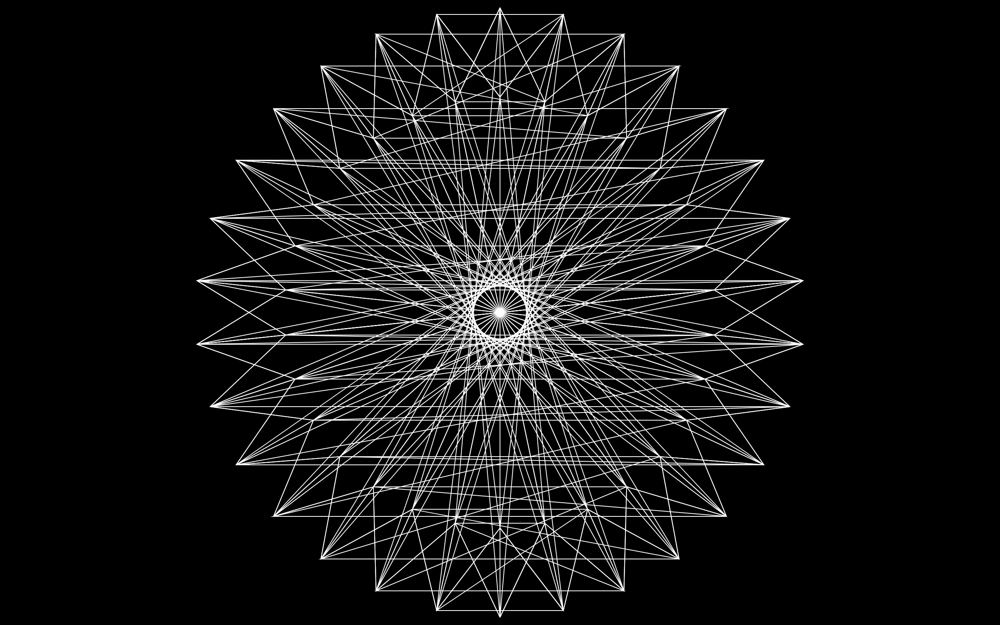

"Shapeless Sounds" is an audio-interactive web sketch that is inspired by glitch music and visuals.
A variety of glitch-style audio tracks are available to the user through a graphic user interface.
The sketch interprets the resulting audio data to animate or draw shapes drawn onto the window canvas.
Enjoy!